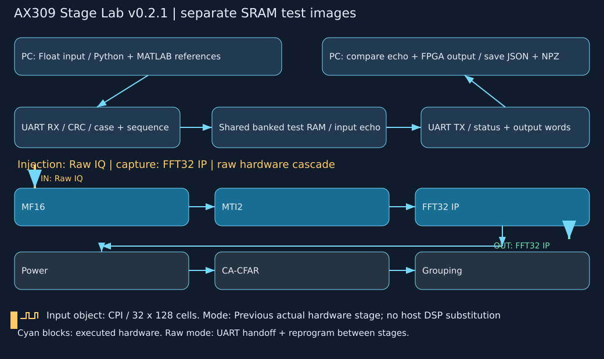
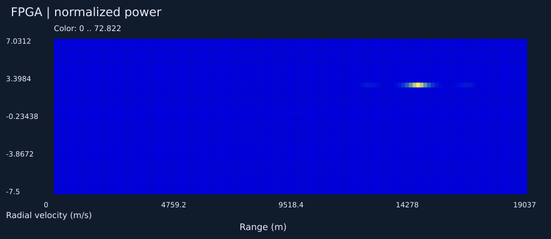
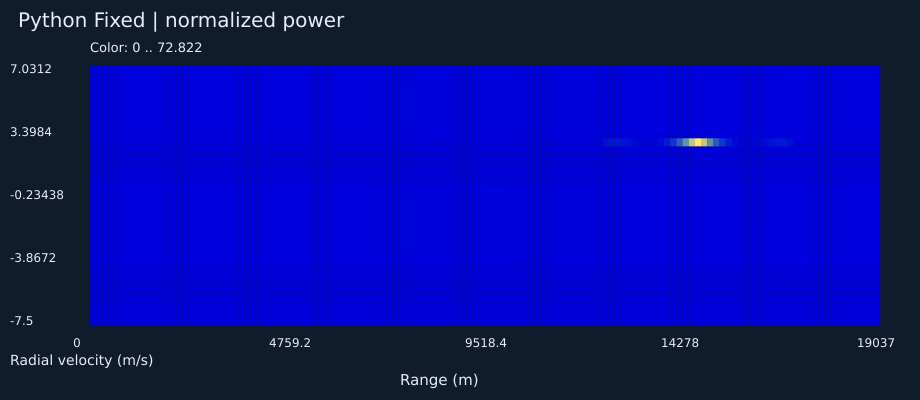
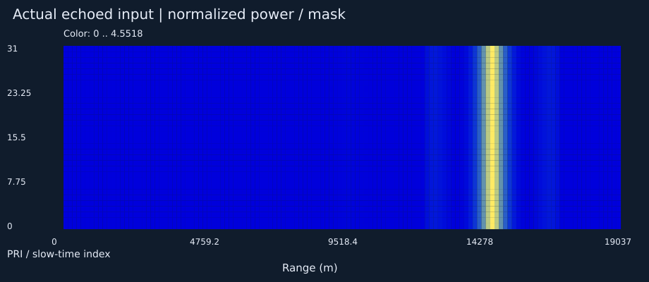
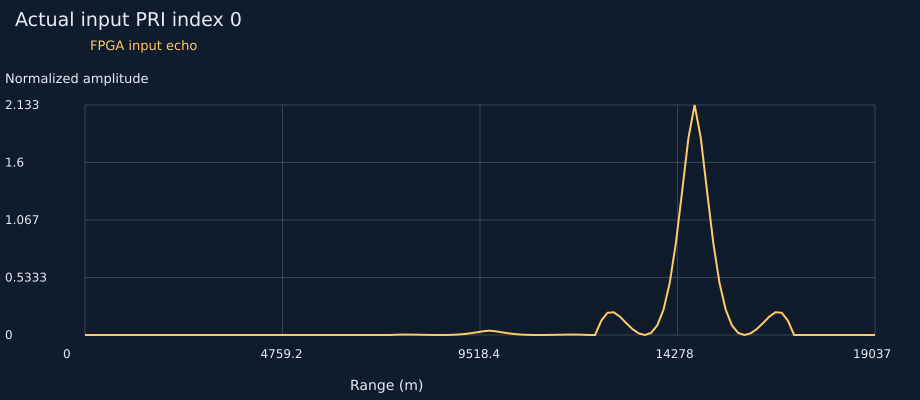
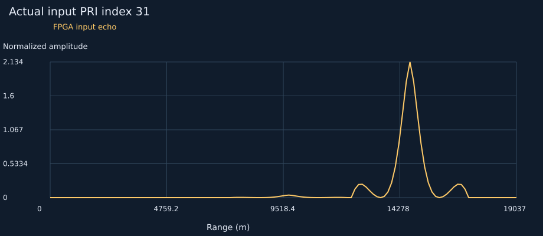
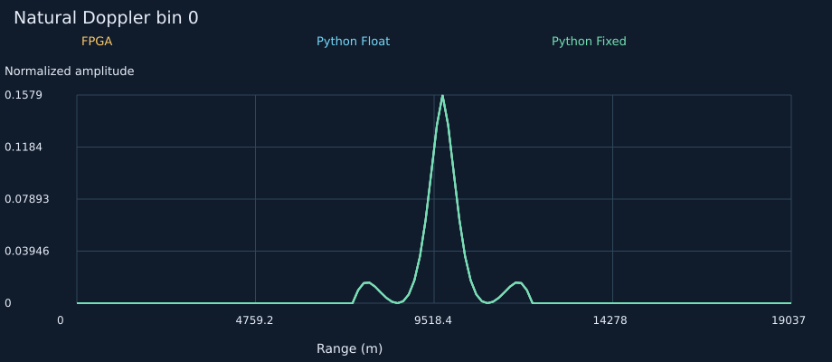
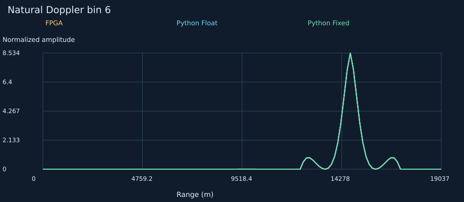
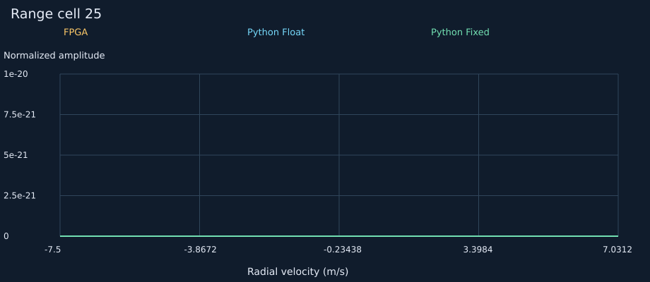
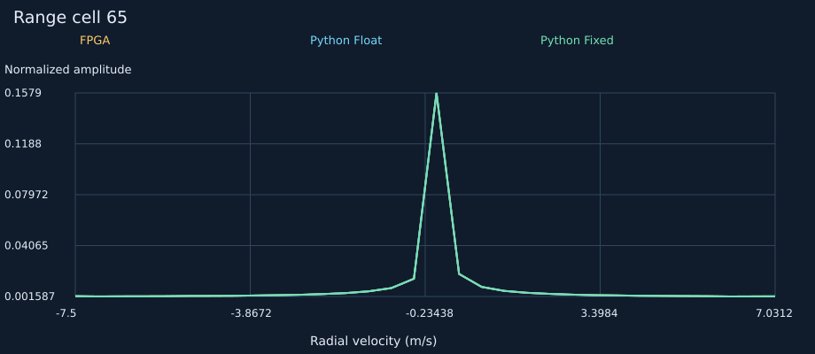
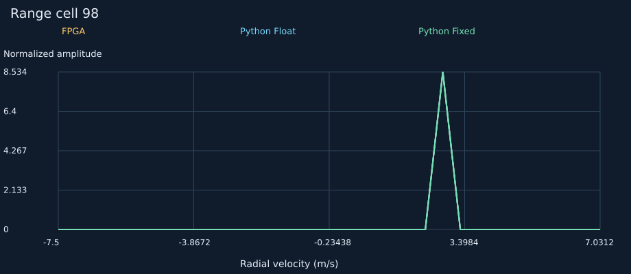
| مرجع | معیار | مقدار |
|---|---|---|
| Python Float | RMSE | 1.34278e-05 |
| Python Float | NRMSE_percent | 0.00519017 |
| Python Float | max_abs_error | 0.000139521 |
| Python Float | units | normalized amplitude |
| Python Float | exact_integer | تعریفنشده |
| Python Fixed | RMSE | 0 |
| Python Fixed | NRMSE_percent | 0 |
| Python Fixed | max_abs_error | 0 |
| Python Fixed | units | normalized amplitude |
| Python Fixed | exact_integer | 1 |
| مرجع | معیار | مقدار |
|---|---|---|
| Python Float | RMSE | 1.03728e-05 |
| Python Float | NRMSE_percent | 0.00400936 |
| Python Float | max_abs_error | 8.33954e-05 |
| Python Float | units | normalized amplitude |
| Python Float | exact_integer | تعریفنشده |
| Python Fixed | RMSE | 0 |
| Python Fixed | NRMSE_percent | 0 |
| Python Fixed | max_abs_error | 0 |
| Python Fixed | units | normalized amplitude |
| Python Fixed | exact_integer | 1 |